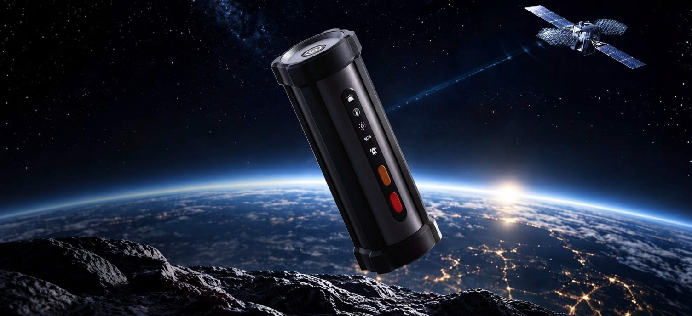
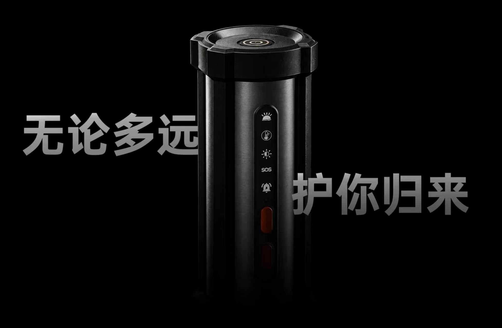
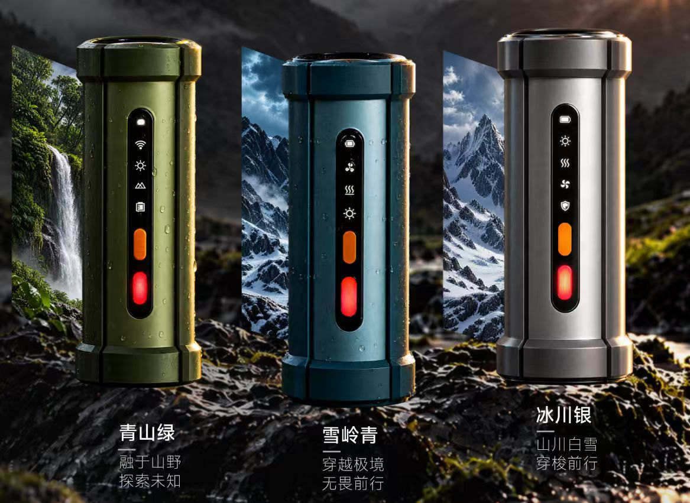

01通信
北斗传信
跨越信号盲区
无公网环境下，仍可发送关键求救信息。探索不必停在信号消失的地方。
02可靠
判断是前提
扛得住，才可靠
碎石、泥点与冲击扑面而来。柱身、护圈和实体按键留在手里，下一次呼救才有着落。
03组网
多人组网
多节点接力传信
一个人的信号有限。队友彼此组网，信息沿节点接力，穿过这片山谷。
无论多远，护你归来。AEGIS 把卫星传信、环境感知、定位与能源管理收进一支可握于掌心的终端，让探索在判断清楚之后，仍然有路可回。


01通信
无公网环境下，仍可发送关键求救信息。探索不必停在信号消失的地方。
02可靠
碎石、泥点与冲击扑面而来。柱身、护圈和实体按键留在手里，下一次呼救才有着落。
03组网
一个人的信号有限。队友彼此组网，信息沿节点接力，穿过这片山谷。
配色
青山、雪岭与冰川。机身颜色贴近你将要走进的那片地。护圈、柱身与停在表面的水珠，为山野天气而准备。

机身
光线差、戴着手套的时候，仍然靠位置和手感完成求救。
环形按键置于机顶。开与关，都在同一处。
照明、温度、SOS 与警报，沿机身纵向排列。
橙色在上，红色在下。红色求救键与 SOS 放在一起，单独区分。
警报与求救分开标示，需要被找到的时候不必犹豫。
参数
以下为已经呈现在产品形象中的能力与结构。未写出的数值，不作承诺。
| 产品名称 | AEGIS 守界 |
|---|---|
| 产品类型 | 户外应急通信终端 |
| 产品主张 | 守界 · 为更安全的探索 |
| 一体集成 | 通信、感知、定位、能源管理 |
| 通信 | 北斗传信。无公网环境下，仍可发送关键求救信息。 |
| 组网 | 多人组网，多节点接力传信。 |
| 机身交互 | 顶部环形电源键。纵向指示：照明、温度、SOS、警报。橙色按键在上，红色求救键在下。 |
| 结构 | 柱形机身，上下护圈，正面实体按键。配色画面中，机身表面可见水珠。 |
| 配色 | 青山绿、雪岭青、冰川银 |
| 场景 | 山野徒步、雪岭、冰川，以及没有地面公网的盲区。适合团队出行时彼此接力。 |
页面依据产品形象整理，用于展示产品方向。防护等级、续航、重量、频段与认证未在本页标出，不以未列出的数值作为承诺。
预约
留下联系方式，了解 AEGIS 如何进入你的下一次出发。
已记下